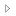
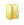

gp.gexplor.fr
gp est un outil de consultation de couches géographiques
développé de manière itérative par Benoît DAVID (MEDDE/CGDD/DRI/MIG).
Il permet :
- de choisir un point de vue (métropole, DOM, ...),
- d'afficher interactivement des couches exposées par un ensemble prédéfini de serveurs WMS/WMTS/Tile.
Depuis le 26 mars 2017, les services WMS de Géo-IDE Catalogue, de Carmen et de Cartélie décrits dans le Géocatalogue sont consultables.
Ainsi 46541 couches sont consultables.
Utilisation simple
Pour utiliser les fonctionnalités, cliquer sur le boutton en dessous du contrôle de zoom
qui affiche un arbre contenant :
- une liste des points de vue prédéfinis,
- une liste de serveurs WMS/WMTS/Tile
organisés selon un classement hiérarchique géographique donnant accès à leurs couches.
Pour se déplacer dans l'arbre, cliquer sur l'icone à gauche des dossiers ()
afin d'ouvrir ou fermer le dossier.
Dans le sous-arbre des points de vue, chaque point de vue est représenté par un document ()
qui peut être activé (en cliquant sur son titre) afin de déplacer la fenêtre principale Leaflet
sur la zone correspondant au point de vue.
Dans le sous-arbre des couches, les premiers niveaux de dossiers () correspondent au classement hiérarchique des serveurs.
Chaque serveur est affiché comme un dossier avec un titre post-fixé entre parenthèses par son protocole (tile, WMS ou WMTS).
En activant le dossier représentant un serveur (cad en cliquant sur son titre),
une page décrivant les capacités du serveur est affichée.
En ouvrant le dossier représentant un serveur (cad en cliquant sur l'icône à gauche du dossier
), la liste des couches du serveur est affichée
ou, si les couches sont organisées hiérarchiquement dans le serveur, l'arbre des couches.
Chaque couche est affichée dans l'arbre comme un document () ;
en cliquant dessus, la couche est affichée dans la fenêtre principale Leaflet,
elle est ajoutée dans le contrôle de couches Leaflet et son titre dans l'arbre passe en gras.
En cliquant à nouveau dessus, l'affichage Leaflet est supprimé, elle est retirée du contrôle de couches
et son titre repasse en mode normal dans l'arbre.
Une couche d'un serveur WMS est ajoutée comme couche superposable en PNG ;
une couche d'un serveur tuilé est ajoutée comme couche superposable si son format est PNG et en couche de base
si son format est JPEG.
Utilisation plus avancée
Certains serveurs apparaissent dans l'arbre avec un titre barré. Cela signifie qu'a priori leurs couches ne peuvent pas
être affichées en raison d'une incompatibilité des systèmes de projection.
En effet, dans cette application l'affichage est effectuée en projection Web Mercator, très courante sur le Web,
ou dans l'un des 3 systèmes de coordonnées suivants : WGS84 (EPSG:4326), RGF93 (EPSG:4171), ETRS89 (EPSG:4258) ;
les serveurs ne proposant aucun de ces systèmes de coordonnées ne peuvent pas être utilisés.
De même, lorsqu'un titre de couche apparait barré, cela signfie que la couche n'est pas exposée dans l'un des
4 systèmes de coordonnées ci-dessus.
Le comportement d'ajout de couche présenté ci-dessus peut être inversé en gardant la touche Shift appuyée
lors de l'ajout de la couche.
Dans ce cas, une couche WMS est ajoutée comme couche de base en JPEG, une couche tuilée PNG est ajoutée comme couche de base
et une couche tuilée JPEG est ajoutée comme couche superposable.
Lorsqu'une couche ne s'affiche pas dans Leaflet, il n'est pas aisé d'en diagnostiquer la raison.
Un tel diagnostic peut être facilité en cliquant sur le nom de la couche en laissant appuyées simultanément les touches Shift et Cntrl.
Cette commande ouvre une fenêtre qui appelle directement l'affichage de la couche à partir du serveur sans passer par Leaflet.
Le menu Outils permet de générer un géo-signet.
Feuille de route
Les améliorations suivantes sont envisagées :
- proposer la possibilité de déplacer la fenêtre de visualisation vers l'extension d'une couche particulière
pour faciliter la consultation de couches ayant une extension réduite,
- compléter la liste des serveurs à partir de ceux présents dans le Géocatalogue,
Composants utilisés
Cette application utilise principalement :
--
Page mise à jour le 26/3/2017.